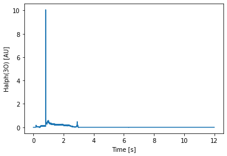

2. Quick Start Guide
2.1. Retrieve Analyzed Data
At first, load nifs.retrieve.anadata.AnaData class:
[1]:
from nifs.retrieve import AnaData
And initialize AnaData class with parameters:
shotnumber : 80000, subshot number : 1
[2]:
ana = AnaData(80000, 1)
If you would like to search for registerd diagnostics in the kaiseki-server,
the property diagnostics_list is useful because it returns a dict of
key: diagnostics name and value: description:
[7]:
ana.diagnostics_list
{'Flxloop': 'Time-integrated data of flux loops at 1,2,3,4,5,7,8,9,10-Oport',
'HDBASpec_TSfit': 'smoothed cxs6 and cxs7 ion temperature used in HDBA '
'spectroscopy',
'bolo': 'Total radiated power measured by wide angle metal foil resistive '
'bolometer at Port 3-O',
'co2_NL': 'Line integrated electron density measured with CO2 interferometer',
'ece': 'electron cyclotron emission in frequency with radiometer at 8O (50Hz)',
'ech': 'Wave form of ECH pulse',
'ech2': 'ECH pulses of 84G_1.5LS and 84G_2Oright',
'echpw': 'injection power of ECH',
'fir_FJ': 'Timing of the first fringe jump of FIR laser interferometer',
'firc': 'line integrated electron density measured with FIR central chord',
'fircall': 'line averaged and line integrated electron density measured with '
'FIR',
'gas_puf': 'Control voltage of piezo-valves for gas puffing',
'ha1': 'Time behaviors of visible lines of Halpha and HeI',
'imp01': 'Line intensities of Lyman-alpha and some impurity ions',
'ip': 'Plasma Current measured with Rogowski coil inside vacuum vessel',
'lhdcxs5_cvi': 'ion temperature and plasma rotation of carbon measured with '
'cxs5',
'lhdcxs7_cvi': 'ion temperature and plasma rotation measured with cxs7',
'lhdcxs_nbi': 'NBI adc data for cxs analysis',
'lhdmse1_input': 'input parameters for lhdmse1_db',
'mapping_ts': 'mapping parameters for the best fit of Te profiles measured '
'with YAG Thomson scattering',
'mmw': 'line density data of microwave interferometer. 3O horizontal view',
'mwrm_9o_R_cutoff': 'Cutoff positions of 9O R-band freq-hopping DBS',
'mwrm_comb_1_cutoff': 'Cutoff position of ch1 of 3O R-band freq-comb DBS',
'mwrm_comb_2_cutoff': 'Cutoff position of ch2 of 3O R-band freq-comb DBS',
'mwrm_comb_3_cutoff': 'Cutoff position of ch3 of 3O R-band freq-ｃomb DBS',
'mwrm_comb_4_cutoff': 'Cutoff position of ch4 of 3O R-band freq-ｃomb DBS',
'mwrm_comb_5_cutoff': 'Cutoff position of ch5 of 3O R-band freq-ｃomb DBS',
'mwrm_comb_6_cutoff': 'Cutoff position of ch6 of 3O R-band freq-comb DBS',
'mwrm_comb_7_cutoff': 'Cutoff position of ch7 of 3O R-band freq-comb DBS',
'mwrm_comb_8_cutoff': 'Cutoff position of ch8 of 3O R-band freq-comb DBS',
'nb1pwr': 'NBI power of BL1',
'nb1pwr_temporal': 'NBI power of BL#1 (tentative)',
'nb2pwr': 'NBI power of BL2',
'nb2pwr_temporal': 'NBI power of BL#2 (tentative)',
'nb3pwr': 'NBI power of BL3',
'nb3pwr_temporal': 'NBI power of BL#3 (tentative)',
'nb4_la_Ib': 'attenuation of beam current density of lNB#4LA',
'nb4_lb_Ib': 'attenuation of beam current density of NB#4LB',
'nb4_total_Ib': 'summed up of nb4_la_Ib, nb4_lb_Ib, nb4_ua_Ib, nb4_ub_Ib',
'nb4_ua_Ib': 'attenuation of beam current density of NB#4UA',
'nb4_ub_Ib': 'attenuation of beam current density of NB#4UB',
'nb4a_fraction': 'particle fraction (E, E/2, E/3) of NB#4A',
'nb4apwr_temporal': 'NBI power of BL#4b (tentative)',
'nb4avg_fraction': 'averaged particle fraction (E, E/2, E/3) of NB#4',
'nb4b_fraction': 'particle fraction (E, E/2, E/3) of NB#4B',
'nb4bpwr_temporal': 'NBI power of BL#4a (tentative)',
'nbi': 'Acceleration power-supply current of NBI',
'nbpwr_tot_temporal': 'NBI Pport-through sum',
'shot': 'shot shot number, cycle number, date, time,magnetic field '
'configuration',
'sxtiming': 'Timing for the ADC module for SX measurement, where the sampling '
'rate is changing in a discharge. Note that, the retrieve_t does '
'not return the correct timing data. Please use this information '
'instead',
'thomson': 'electron temperature and density measured with YAG Thomson',
'ti_crystal': 'Time behavior of central ion temperature from TiXXI or ArXVII',
'tsmap': 'mapped electron temperature and density measured with YAG Thomson',
'tsmap_SavGol': 'Normalized Thomson smoothed with a Savitzky-Golay filter.',
'tsmap_polyfit': 'Density profile fitted with polynominal function',
'tsmap_reff': 'effective minor radius at YAG Thomson position and timing',
'tsmesh': 'effective minor radius and local magnetic field (reff. B_r, B_z, '
'B_phi) in 3D geometry',
'tsmesh_h': 'effective minor radius and local magnetic field (reff. B_r, B_z, '
'B_phi) at holizontally elongated cross section',
'tsmesh_m': 'effective minor radius and local magnetic field (reff. B_r, B_z, '
'B_phi) at midplane',
'tsmesh_v': 'effective minor radius and local magnetic field (reff. B_r, B_z, '
'B_phi) at vertically elongated cross section',
'tswpe': 'electron kinetic energy and profile fitting parameter as a function '
'of r_eff',
'tswpe_reff': 'effective minor radius at YAG Thomson position and timing',
'wp': 'Plasma stored energy estimated by diamagnetic flux measurement'}
As another options, diagnostics names are availabe from a list of analyzed data or the search for registerd data site. Note that both site is accessible only in NIFS network.
If you would like to retrieve “ha1” diagnostics dataset,
use the method retrieve() which returns xarray.Dataset object.
[4]:
dataset = ana.retrieve("ha1")
dataset
[4]:
<xarray.Dataset>
Dimensions: (Time: 12001)
Coordinates:
* Time (Time) float64 0.0 0.001 0.002 0.003 ... 12.0 12.0 12.0 12.0
Data variables:
Halph(3O) (Time) float64 -0.00378 0.001103 ... 0.001103 0.001103
HeI(3O) (Time) float64 0.00252 -0.002363 ... -0.002363 -0.002363
Halph(ImpMon) (Time) float64 0.002835 0.002835 ... -0.002048 0.002835
HeI(Impmon) (Time) float64 0.002835 0.002835 ... -0.002048 -0.002048
Attributes:
diagnostics: ha1
description: summary_data\n
shot_number: 80000
shubshot_number: 1xarray.Dataset
- Time: 12001
- Time(Time)float640.0 0.001 0.002 ... 12.0 12.0 12.0
- units :
- s
array([0.0000e+00, 1.0000e-03, 2.0000e-03, ..., 1.1998e+01, 1.1999e+01, 1.2000e+01])
- Halph(3O)(Time)float64-0.00378 0.001103 ... 0.001103
- units :
- AU
array([-0.00378024, 0.00110257, -0.00378024, ..., 0.00110257, 0.00110257, 0.00110257]) - HeI(3O)(Time)float640.00252 -0.002363 ... -0.002363
- units :
- AU
array([ 0.00252016, -0.00236265, 0.00252016, ..., -0.00236265, -0.00236265, -0.00236265]) - Halph(ImpMon)(Time)float640.002835 0.002835 ... 0.002835
- units :
- AU
array([ 0.00283518, 0.00283518, 0.00283518, ..., -0.00204763, -0.00204763, 0.00283518]) - HeI(Impmon)(Time)float640.002835 0.002835 ... -0.002048
- units :
- AU
array([ 0.00283518, 0.00283518, 0.00283518, ..., -0.00204763, -0.00204763, -0.00204763])
- diagnostics :
- ha1
- description :
- summary_data
- shot_number :
- 80000
- shubshot_number :
- 1
Using a plot method allows us to make a simple graph.
[5]:
dataset["Halph(3O)"].plot()
[5]:
[<matplotlib.lines.Line2D at 0x7f0fff7abd00>]

2.2. Retrieve Raw Data
comming soon…